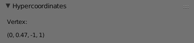

The Blender hypermesh addon allows the manipulation of meshes in 4-dimensional Euclidean space. This is achieved by using ordinary Blender tools to manipulate projections of this 4-mesh to 3-dimensional Euclidean space.
This is the user guide for the addon.
It is intended for anybody who wants to use the hypermesh addon.
If you want to understand (or work on) the code, please read this document and also the
file internals.md.
There are two ways of installing the addon:
The recommended option is to download/clone the repository, and run the script package.py.
This will zip up the contents of the addon folder into a file called hypermesh.zip
(and do some useful renaming).
You can then install the addon using Blender’s File -> User Preferences... -> Install from File...
and picking the generated zip-file.
Alternatively, you can manually copy the addon into the Blender addons folder.
To find out where it is located on your system, consult Blender’s documentation.
Most likely, it is [Blender config directory]/scripts/addons/.
Make sure the addon gets its own folder.
The recommended name for the addon’s folder is hypermesh,
so that you get files [Blender config directory]/scripts/addons/hypermesh/__init__.py
and so on.
Don’t forget to also enable the addon in the user settings.
To remove the addon, you can use the Remove button in Blender’s user preferences,
or just delete the directory that the addon was installed in (typically [Blender config directory]/scripts/addons/hypermesh/).
This section describes the mathematics underlying the addon. It is recommended that you read this section to understand the exact behavior of the addon. The mathematical concepts will be illustrated using pictures in one dimension lower (so the pictures show how the analogous addon would work for manipulating 3-dimensional meshes using software than handles 2-dimensional meshes).
The meshes that are handles by the addon are meshes living in 4-dimensional Euclidean space. These meshes have
This is just like an ordinary Blender mesh, except that vertices have 4 coordinates. The addon does not handle hyperfaces, 3-dimensional faces of 4-dimensional meshes. (Such hyperfaces would overlap after projection to 3-space. There are currently no plans to ever support hyperfaces.)
A hypermesh is visualized in the 3D view by projecting it to 3-dimensional Euclidean space (the same way that 3-dimensional objects in the viewport are visualized by projecting onto a flat monitor for most users — so, really, the 4-meshes are projected to 3-space and then to 2-space, and that’s what you see).
The following picture illustrates such a projection.
The 3-dimensional space is projected to the 2-dimensional space represented by the semi-transparent plane. At the center of this plane is a black dot known as the view center. The camera position is the other black dot. The picture shows the projection of the white dot to the plane.
What the addon does is the analogous operation from 4-space to 3-space. The following parameters describe a projection:
View center: the origin of the 3-space that we are projecting to
(the rightmost black dot in the picture)Camera offset: the vector from the viewcenter to the camera’s position
(purple and pointing to the left in the picture)X vector: the vector such that (view center + x vector) is projected to (1,0,0)
(blue and pointing to the lower right in the picture)Y vector: the vector such that (view center + y vector) is projected to (0,1,0)
(orange and pointing up in the picture)Z vector: the vector such that (view center + z vector) is projected to (0,0,1)
(missing from the picture because there’s a dimension missing)Perspective: whether to project using perspective or notIn the picture above, the white point gets mapped to about (0.4, -0.2) in the perspective case, and to about (0.8, -0.3) in the non-perspective case.
When the hyperposition of a vertex is changed, it is re-projected and the 3D view shows the updated projection. This is straightforward. However, when the projection of the vertex is manipulated, updating its hyperposition is ambiguous: there are infinitely many points in 4-space that project to the given point. To resolve this ambiguity, the addon does the following: when a vertex is moved in 3-space, the underlying point in 4-space moves parallel to the projection 3-space.
By default, the addon does not affect any of Blender’s mesh operations. Only the meshes that are explicitly marked as hypermeshes will be treated by the addon.
There are two ways of creating a hypermesh:
Make hyper operator
(<spacebar> -> Make hyper in the 3D view).Insert hypercube operator
(<spacebar> -> Insert hypercube in the 3D view).Now that you have created a hypermesh, new panels appear in the UI:
In the Scene context of the Properties window, a panel called Hypermesh projections lists the projections from 4-space to 3-space that are available in the scene.
Four useful projections are added by default. These are called No W, No X, No Y and No Z. The projection No W just projects the point (w,x,y,z) to (x,y,z), effectively allowing you to directly edit 3 of the 4 coordinates of each vertex. The other default projections are analogous.
Projections can be edited in this panel. For the meaning of the different options, refer to the math of the projections earlier in this document.
You can rename a projection by double-clicking on its name. It is currently impossible to add or remove projections (so you’ll always have 4 in the scene).
In the properties panel in the 3D View, another panel called Select projection allows you to select which projection to use for the selected object. When you pick a different projection, the 3-dimensional mesh changes shape (but the underlying 4-dimensional mesh stays the same).
In the 3D View when editing a hypermesh (<tab> for edit mode), a panel called
Hypercoordinates shows the average of the positions of all selected vertices
in 4-space.
Please read the subsection Updating the hypercoordinates before using this panel.



When the 3-dimensional projection of a hypermesh is manipulated,
the hypercoordinates of the vertices are not automatically updated (for performance reasons).
If you want to force an update of the hypercoordinates, use the Update hypercoordinates operator
(<spacebar> -> Update hypercoordinates).
Note that this is necessary in order for the panel Hypercoordinates to show the correct coordinates (!).
If you are not interested in precise hypercoordinates, it is not necessary to call the
Update hypercoordinates operator. For example, when you change a hypermesh’s projection,
the hypercoordinates are recalculated automatically before the hypermesh is projected using
the new projection.